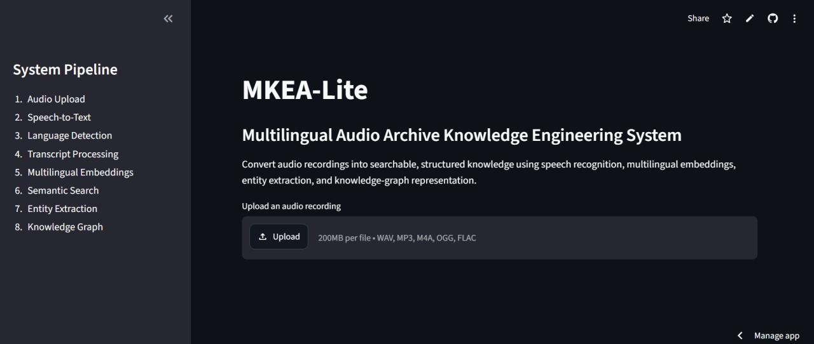
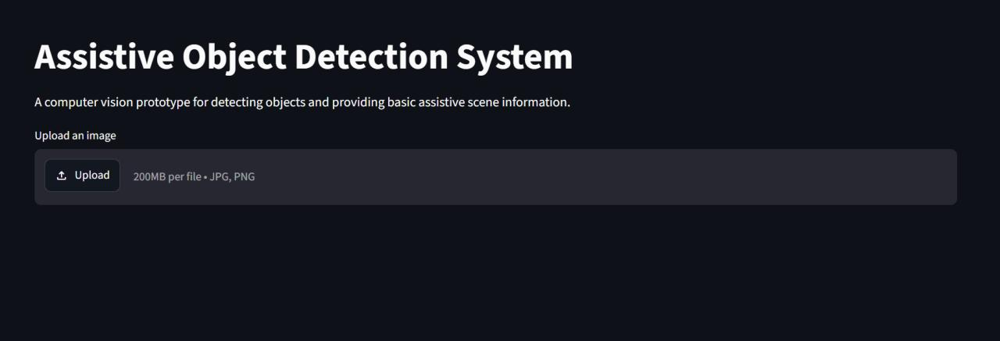
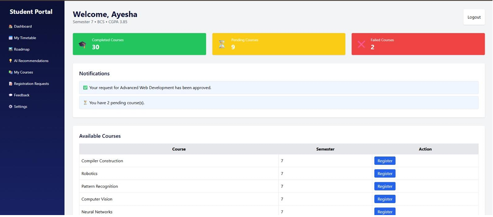
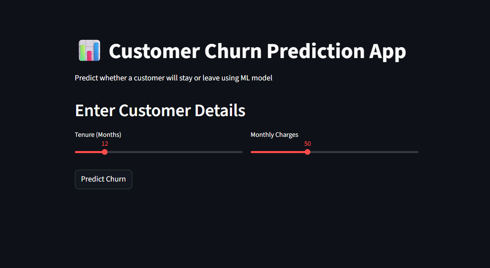
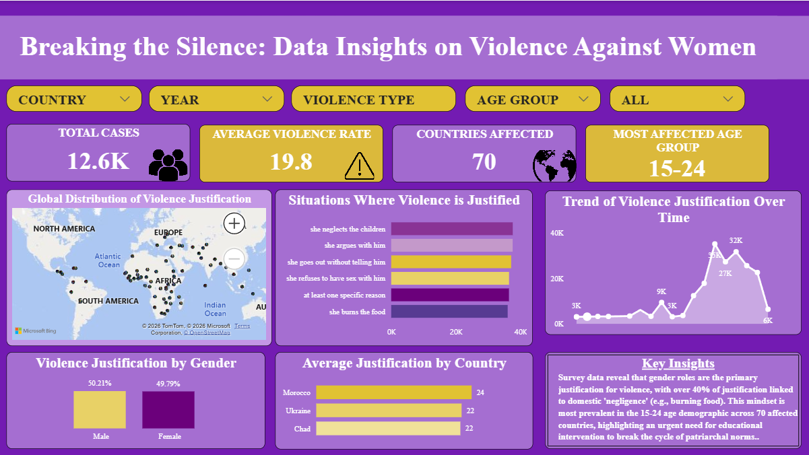
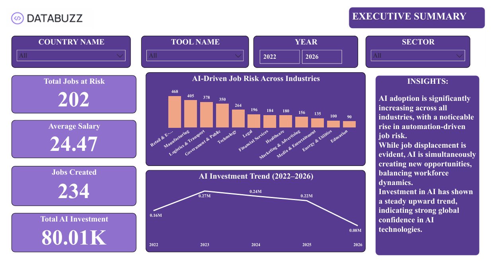
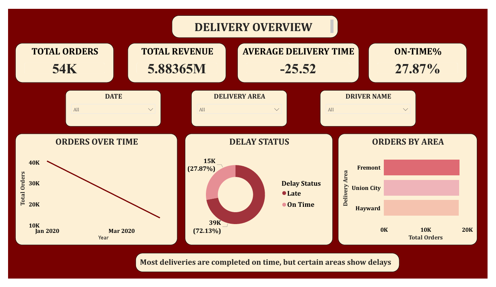
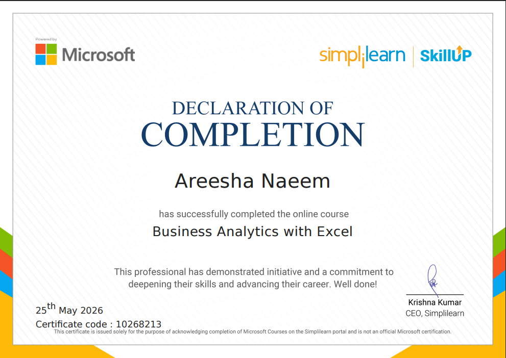
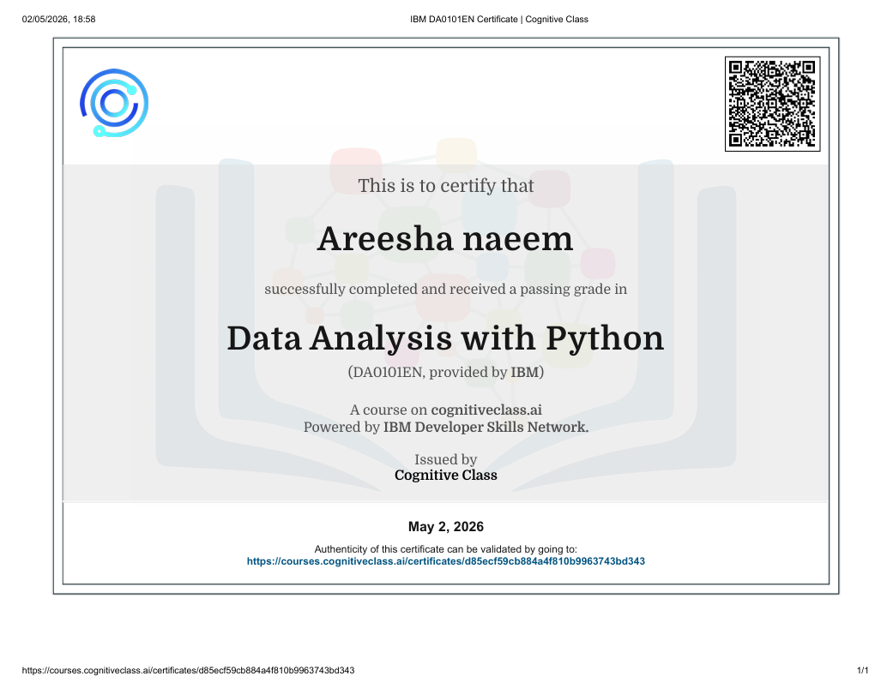

01. Introduction
Areesha Naeem
Software Developer | AI & Full-Stack Developer
I build software systems that turn real-world problems into practical applications. My work spans AI/ML, NLP, computer vision, full-stack development, and data engineering, with hands-on experience building research prototypes, interactive AI applications, and production-oriented web features.
Core Skills
Software & Frontend
AI & Machine Learning
Backend & Data
Core Capabilities
- AI-Powered Application Development
- Full-Stack Software Development
- Machine Learning & Computer Vision
- Problem Solving & System Design
- Research Prototyping & Rapid Development
- Team Collaboration & Git Workflow
02. Education & Experiences
Full Stack Developer
Drivethru AdmissionsRemote / Hybrid
- Developed and improved frontend features for a production-oriented university admissions platform using modern web technologies.
- Implemented university and course filtering functionality along with responsive UI enhancements and user-facing improvements.
- Investigated and resolved frontend issues, including UI bottlenecks and image-display problems.
- Followed Git/GitHub workflows, feature branching, pull requests, code reviews, formatting standards, and team feedback.
- Collaborated with developers and managers to implement iterative improvements and deliver features based on project requirements and feedback.
Computer Science Intern
Pakistan Aeronautical Complex (PAC) Kamra Onsite
- Extracted, cleaned, and analyzed massive production and operational flight datasets.
- Programmed lightweight Python script automation to compile and dispatch daily reports.
- Formulated executive-level Power BI dashboards to track aircraft reliability and operational KPIs.
BS Computer Science (BSCS)
Comsats University Islamabad
03. Featured Projects
A selection of AI, software engineering, full-stack, and data-driven projects built to solve practical problems through intelligent systems and modern technologies.



AI Course Registration System
Intelligent course registration application combining a modern web interface with Python-based recommendation and data-processing components to support personalized course selection.

Customer Churn Prediction
End-to-end machine learning application for predicting customer churn, including data preprocessing, model training, evaluation, and an interactive Streamlit interface.

Supply Chain Analytics Dashboard
Interactive supply chain analysis covering revenue, shipments, suppliers, products, logistics performance, and operational efficiency.
E-Commerce Sales Analytics
End-to-end analytics project exploring revenue trends, customer behavior, product performance, and business KPIs through SQL and interactive dashboards.

HR Analytics Dashboard
Workforce analytics dashboard examining employee demographics, attrition patterns, department-level metrics, and salary distributions.

Super Store Sales Dashboard
Interactive business intelligence dashboard with sales, profit, category, regional, and forecasting views for retail performance analysis.

Breaking The Silence Analysis
Data visualization project exploring geographic and demographic patterns within a social-impact dataset through interactive analytical views.

AI Skills vs Job Risk
Interactive analytical project examining relationships between AI-related skills, automation exposure, and changing job-market indicators.

Food Delivery Operations Dashboard
Operations dashboard analyzing delivery performance, cancellations, regional revenue, dispatch times, and fleet efficiency.
04. Accreditations

Business Analytics with Excel
Simplilearn / Microsoft / SkillUp
Excel formulas, pivot spreadsheets, data modeling, charts, and business forecasting tools.

Data Analysis with Python (DA0101EN)
IBM Course Verification
Exploratory Data Analysis (EDA), pandas sorting, scikit-learn models, regression fits, and matplotlib.

Power BI Project Challenge
Enterprise Dashboard Design
Ingesting relational datasets, resolving logical inconsistencies, modeling schemas, and plotting DAX.

Power BI Challenge — Top Performer
Databuzz Performance Recognition
Awarded to top performers building high-speed reporting dashboards under structured design briefs.
05. Establish Connection
I am actively seeking remote or hybrid Full-Stack Developer & Data Specialist opportunities.